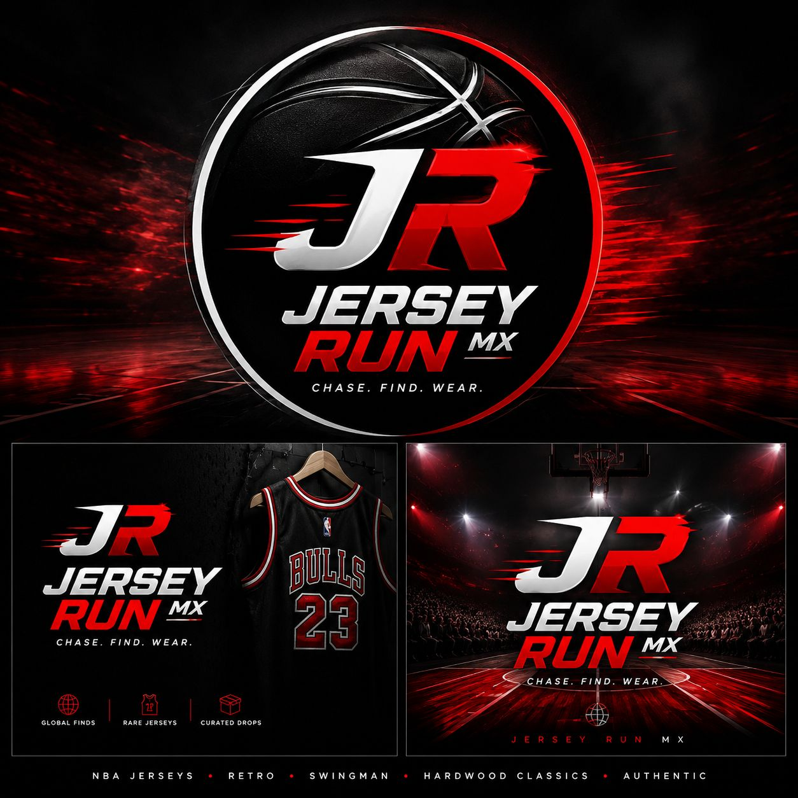

NBA jerseys · retro · current · city editions
Jerseys para verdaderos fans.
Stock limitado en México y Dinamarca. También conseguimos modelos especiales sobre pedido con 50% de anticipo.

stock inmediato
Inventario disponible
Filtra por jugador, equipo, talla o estilo. Cada jersey cuesta $800 MXN.
chase · find · wear
¿Buscas uno especial?
Tenemos acceso a un catálogo amplio de jerseys retro, actuales, city edition y modelos de colección. El pedido se aparta con 50% y llega aproximadamente en mes y medio.
- 1. Mándanos jugador, equipo y talla.
- 2. Confirmamos disponibilidad y diseño.
- 3. Apartas con 50% y liquidás contra entrega.
Modelos populares sobre pedido
información clara
Preguntas frecuentes
¿Son originales?
Son jerseys versión fan premium para coleccionistas. No se anuncian como productos oficiales.
¿Cuánto cuestan?
El precio de stock es de $800 MXN por jersey. Pedidos especiales pueden variar según modelo y disponibilidad.
¿Cuánto tarda el sobre pedido?
Aproximadamente 4 a 6 semanas. Puede variar por logística, aduana o disponibilidad.
¿Cómo aparto?
Con 50% de anticipo. El resto se paga antes de entrega/envío.
¿Listo para encontrar tu jersey?
Escríbenos por WhatsApp y te confirmamos stock, tallas y envío.
Abrir WhatsApp